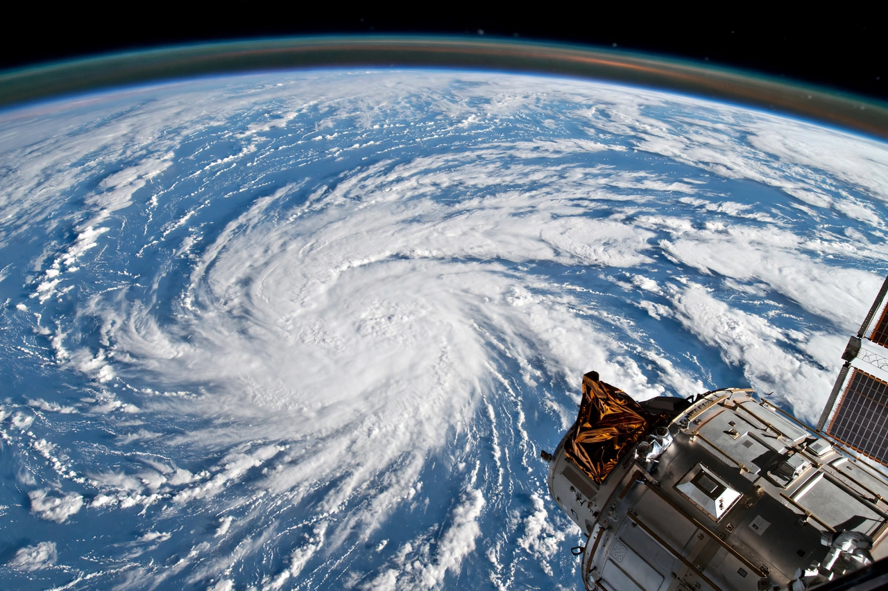
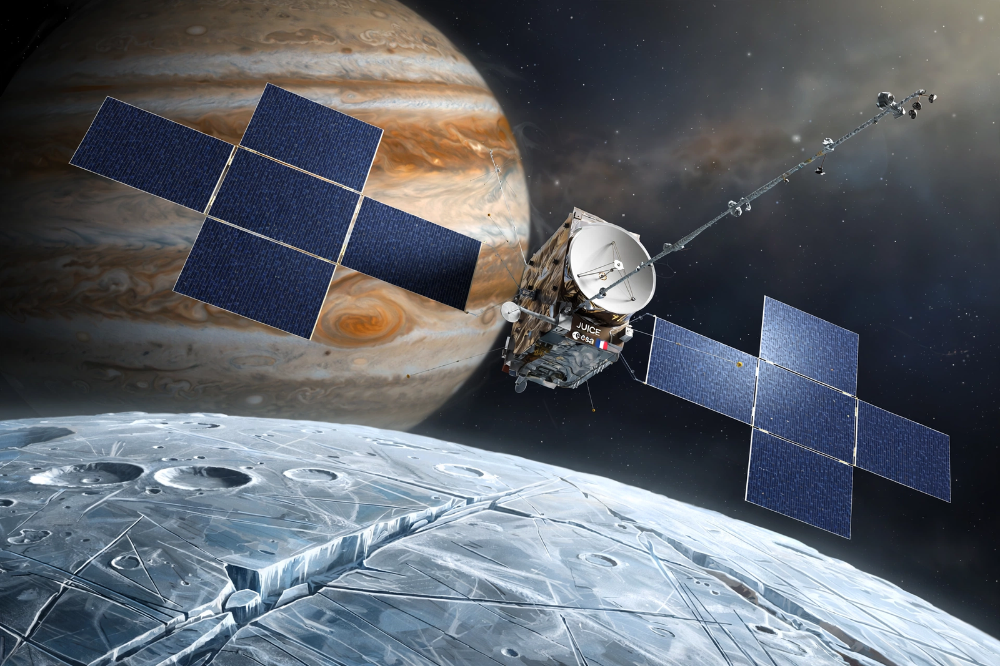
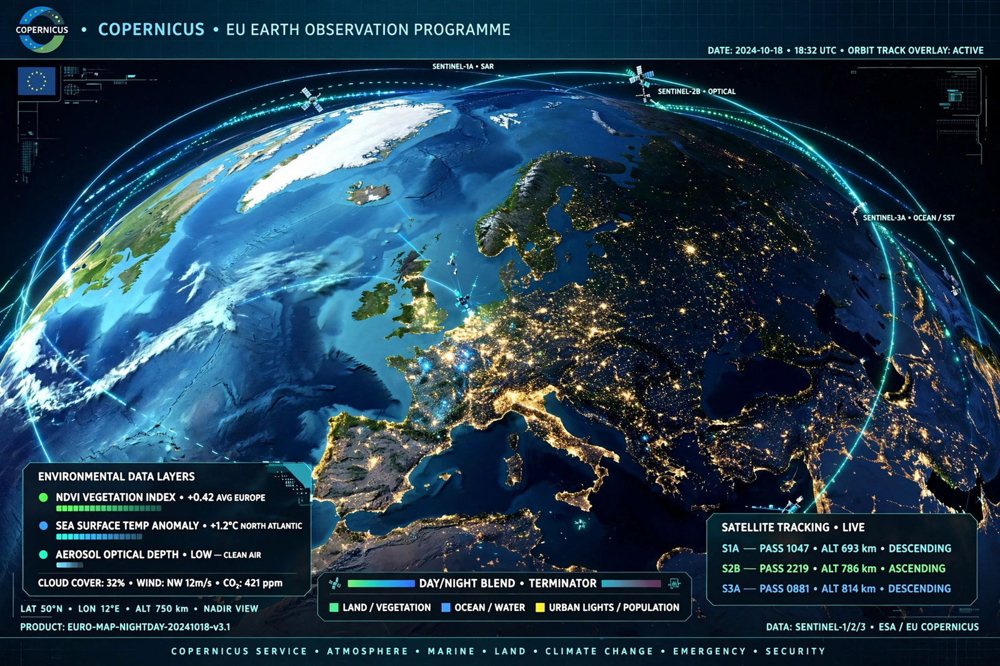
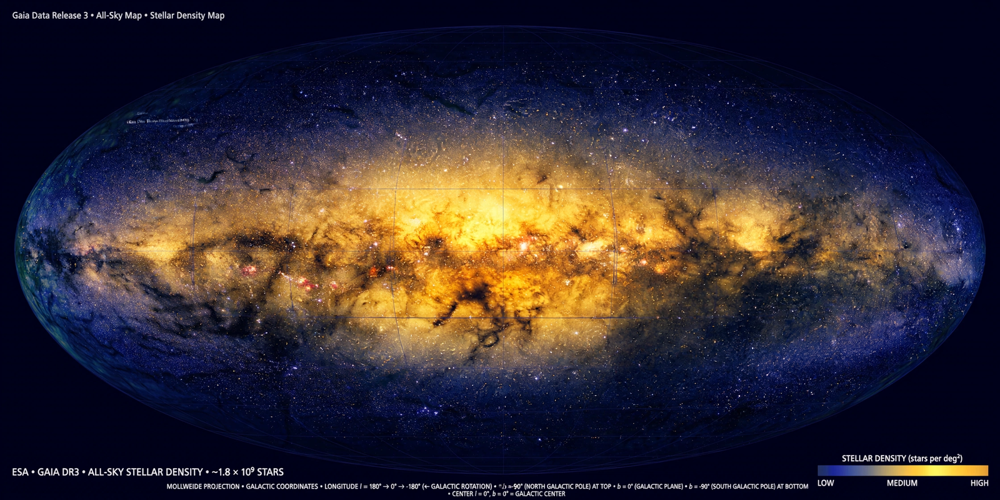

[Image: Earth seen from the International Space Station — blue oceans, swirling cloud, the thin line of the atmosphere, with a European Columbus module edge in frame]The European Space Agency (ESA) is Europe's gateway to space. Its mission is to shape the development of Europe's space capability and ensure that investment in space continues to deliver benefits to the citizens of Europe and the world. ESA is an international organisation with 22 Member States.
Discover ESA
[Image: the Juice spacecraft with huge solar wings approaching Jupiter's icy moon Ganymede, artist's impression]Launched in 2023, ESA's Jupiter Icy Moons Explorer will study Ganymede, Europa and Callisto — moons of Jupiter with subsurface oceans.

[Image: a map of Europe from orbit with glowing data overlays for the Copernicus Sentinel satellites]The Sentinel satellites provide free, full and open data for environment, climate and emergency response — monitoring topics such as climate change.

[Image: the Gaia space telescope's star map — a glowing all-sky view of the Milky Way with billions of stars]Gaia has charted positions and motions of well over a billion stars, transforming understanding of our galaxy, the Milky Way.
ESA cooperates closely with NASA — on the International Space Station, the James Webb Space Telescope (with CSA), the Artemis programme's European Service Module for Orion, and Earth science. Europe's spaceport is in Kourou, French Guiana, home of Ariane and Vega launchers.